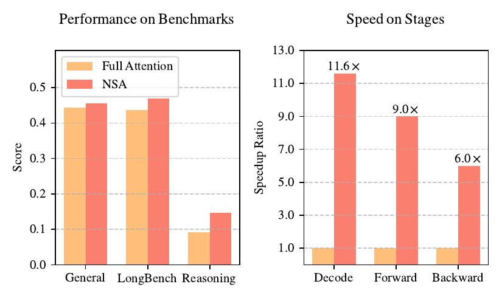
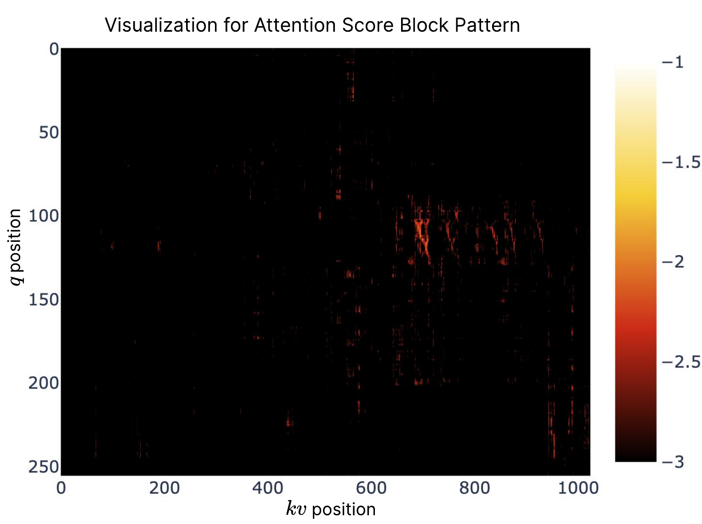
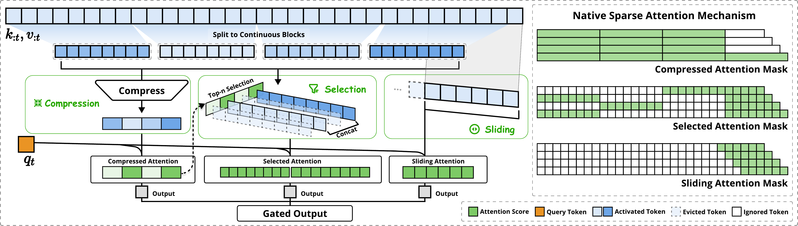
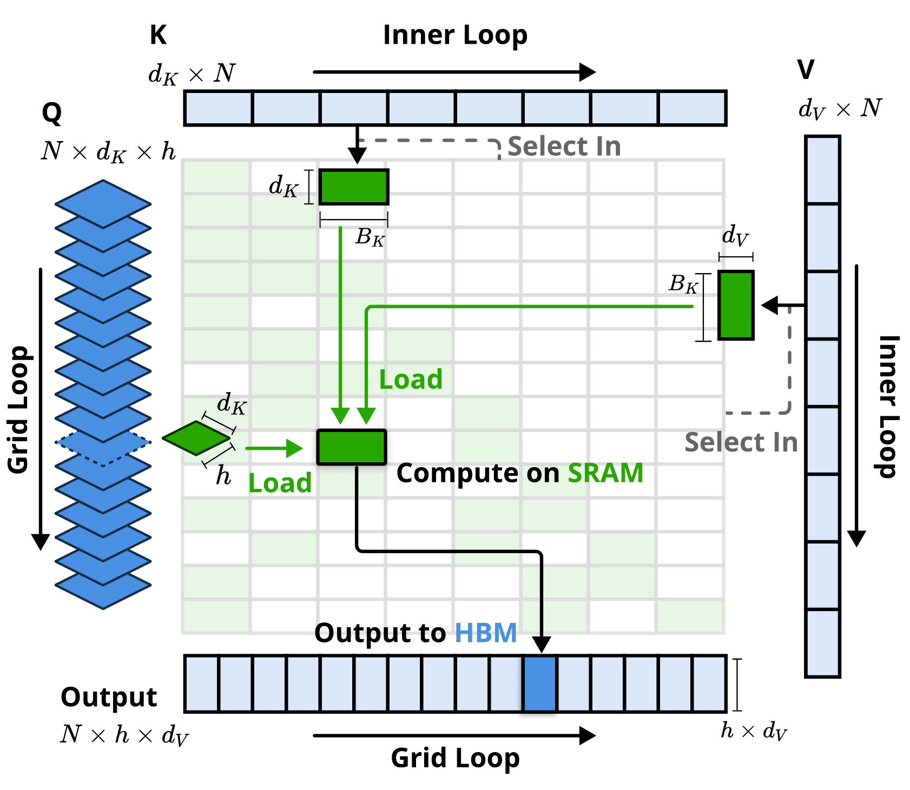
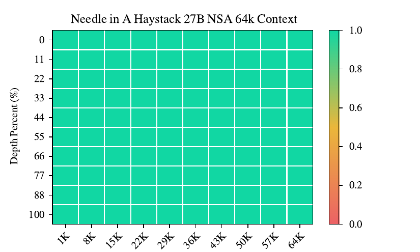
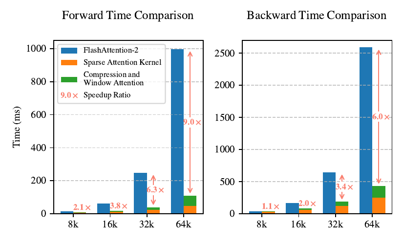

An interactive explainer
Sparse attention: how to read a million tokens without reading them all
A Transformer's attention compares every token to every other token. That $O(n^2)$ scaling is the wall between today's models and the codebases, books, and hour-long reasoning traces we want them to read — at a 64k context, attention alone is 70–80% of decoding latency. Sparse attention is the decade-long effort to skip most of those comparisons without losing what matters. This post builds the theory from the cost equation up, walks the literature from 2019's Sparse Transformers to 2025's hardware-aligned designs, and lands on DeepSeek's Native Sparse Attention — which is not only 11.6× faster to decode and 9× faster to train at 64k, but actually beats full attention on accuracy. We finish with an honest comparison of every major approach.

Recall what attention does. For each query token $\vq_t$, it computes a similarity score against every preceding key $\vk_i$, softmaxes those scores into weights, and returns the weighted sum of values:
$$ \vo_t = \sum_{i=1}^{t} \frac{\alpha_{t,i}\,\vv_i}{\sum_j \alpha_{t,j}}, \qquad \alpha_{t,i} = \exp\!\Big(\tfrac{\vq_t^\top \vk_i}{\sqrt{d_k}}\Big) $$
For a sequence of length $n$, that is $n$ scores per query and $n$ queries — $O(n^2)$ work, and an $O(n)$ key-value cache that must be re-read on every decoding step. Double the context, quadruple the attention compute. This is the single biggest obstacle to long-context language models.
But here is the saving grace, observed again and again since 2019: the softmax attention matrix is overwhelmingly sparse. A handful of keys soak up almost all the weight; the rest contribute noise. If we could compute attention against only the keys that matter, we would pay a fraction of the cost for nearly all of the quality. The entire field is variations on one question: which keys matter, and how do we find them cheaply enough — and in a hardware-friendly enough pattern — that the theoretical savings become real wall-clock speedups?
1. Why O(n²) hurts — and the two regimes
The cost of attention is not one number; it splits into two regimes that want opposite optimizations, a distinction NSA makes central. The key idea is arithmetic intensity — the ratio of compute operations to memory accesses. Every GPU has a critical ratio; above it you are compute-bound (limited by FLOPS), below it memory-bound (limited by bandwidth).
- Training and prefilling process all tokens at once. The matrix multiplies are dense and high-intensity, so these stages are compute-bound. The goal: cut FLOPs.
- Autoregressive decoding generates one token per forward pass while re-reading the entire KV cache. Low intensity → it is memory-bound. The goal: cut bytes moved, not FLOPs.
This split is why so many sparse-attention papers that look good on paper disappoint in practice: a method that cuts decoding FLOPs but still streams the whole KV cache saves nothing on the memory-bound stage. Real speedup demands a method that wins in both regimes. The widget below lets you feel the quadratic wall and where sparse attention breaks it.
2. The sparsity patterns
Every sparse-attention method is, at heart, a rule for which cells of the $n \times n$ attention matrix to compute and which to skip. Over the years a small vocabulary of patterns emerged, and almost every method is a combination of them:
Fixed patterns
Sliding window (local): each token attends to its $w$ nearest neighbors — a diagonal band. Cheap and captures the fact that language is mostly local, but a pure window can never see far back. Strided / dilated: attend to every $k$-th token, giving long reach at coarse resolution (Sparse Transformers). Global tokens: a few special tokens attend to — and are attended by — everything, acting as a shared scratchpad (Longformer, BigBird). Combine local + strided or local + global and you get most of the early architectures.
Learned and dynamic patterns
Fixed patterns are blind to content. Learned methods choose which keys to attend per query, from the data: cluster keys and attend within a cluster (Routing Transformer), hash similar queries and keys into buckets (Reformer's LSH), or score blocks of keys by importance and keep the top ones (Quest, NSA's selection branch). More accurate, but the selection itself costs compute — and if it is non-differentiable (k-means, hashing), you cannot train through it.
Block-sparse and IO-aware
The hardware twist: GPUs love contiguous, block-structured memory access and hate scattered gathers. So modern methods operate on blocks of tokens, not individual ones — this is what makes them fast in practice, and it is the same insight that powers FlashAttention's exact, IO-aware kernel. Sparse attention done right is block-sparse attention done right.

3. The literature: 2019 → 2025
Sparse attention has a clear arc: from hand-designed fixed patterns, through learned selection, to the recognition that none of it matters unless it is both hardware-aligned and trainable end-to-end. The map below is filterable by track; click any card for what it actually contributed.
Two themes recur. First, the fixed-then-learned drift: the 2019–2020 wave (Sparse Transformers, Longformer, BigBird) used patterns fixed by the architect, with BigBird even proving that local+global+random attention is a universal approximator and Turing-complete. The 2020–2021 wave (Reformer, Routing Transformer) made the pattern depend on content. Second, the theory-then-hardware correction: many methods cut asymptotic complexity but ran no faster, because scattered memory access and per-head selection defeat modern GPUs and GQA. NSA and its contemporary MoBA are the synthesis — learned, block-structured, GQA-aware, and trainable from scratch.
4. Native Sparse Attention: the three branches
NSA's core move is to replace the full key-value set $\vk_{:t}, \vv_{:t}$ with a compact, query-dependent set built from three parallel branches, then blend them with learned gates:
$$ \vo^*_t = \sum_{c \in \{\text{cmp},\,\text{slc},\,\text{win}\}} g_t^c \cdot \Attn\big(\vq_t,\, \tilde{K}_t^c,\, \tilde{V}_t^c\big), \qquad g_t^c \in [0,1] $$
Each gate $g_t^c$ comes from a small MLP on the query, so the model learns how much to trust each branch per token. The three branches divide the labor of reading a long context:
Compression — coarse global scanning
Group keys into blocks of length $l$ (stride $d$) and map each block to a single compressed token via a learnable MLP with intra-block position encoding. This gives a cheap, low-resolution summary of the entire past — enough to know roughly where the relevant information lives. NSA uses $l=32$, $d=16$.
Selection — fine-grained where it counts
Compression alone loses detail, so NSA keeps the full tokens of a few important blocks. The trick that makes this cheap: the importance scores come for free from the compression branch's own attention scores — no separate scoring pass. Keep the top-$n$ blocks (NSA: $l'=64$, $n=16$, always including the first block and the local ones). Crucially, selection is blockwise and shared across a GQA group, so the KV cache loads stay contiguous and small.
Sliding window — local context, isolated
Local patterns learn fast and can dominate, starving the other branches of gradient. So NSA gives local context its own branch (window $w=512$) with its own keys and values, letting compression and selection specialize on long-range structure without being shortcut. The gate then recombines all three.
One query, three branches. Full attention touches every key; NSA replaces them with compressed coarse tokens, a few selected fine-grained blocks, and a local window — then merges with learned gates. The KV-attended counter falls from the full sequence to a small fraction.

5. Hardware-aligned: making sparsity actually fast
A recurring lesson in this field: a lower FLOP count on a slide does not mean a faster model. NSA's headline speedups come from a Triton kernel co-designed with the algorithm, in the same IO-aware spirit as FlashAttention — but adapted for sparse, grouped selection.
selection-attention kernel (per query position t):
# Group-centric load: all heads in a GQA group share the
# same selected KV blocks, so load them together.
load Q = queries of all h heads in the group at t → SRAM
for each selected block index i in I_t: # inner loop
load K_i, V_i (contiguous block) → SRAM
accumulate attention for every head in the group
write output for all heads
# query/output loop lives in Triton's grid schedulerThe insight is the GQA group. Naive sparse selection picks different keys per head; in a GQA model that means the union of all heads' picks must be loaded anyway, killing the memory savings during decoding. NSA forces every head in a group to share the same selected blocks, so the cache load is small and contiguous. Combined with putting the query loop on the grid (balanced because every query selects the same number of blocks), this reaches near-optimal arithmetic intensity — and turns the theoretical sparsity into the 9× / 6× / 11.6× wins below.

6. Results
NSA was pretrained from scratch as a 27B-parameter MoE model (3B active) on 270B tokens — a genuinely native-sparse model, not a sparsified-after-the-fact one. The striking result: the sparse model is not a lossy approximation of full attention. It is better.
| Benchmark | Metric | NSA | Full attention |
|---|---|---|---|
| General (avg of 9) | accuracy ↑ | 0.456 | 0.443 |
| LongBench (avg) | score ↑ | 0.469 | 0.437 |
| 64k Needle-in-Haystack | retrieval ↑ | perfect | perfect |
| AIME (after R1 distillation, 16k) | accuracy ↑ | 0.146 | 0.092 |
| Speed @ 64k | decode | 11.6× | 1× |
| forward (train/prefill) | 9.0× | 1× | |
| backward (train) | 6.0× | 1× |
From Tables 1–4 and Figures 5–6 of the paper. On LongBench, NSA beats every sparse baseline too (Exact-Top 0.423, Quest 0.392, InfLLM 0.383, H2O 0.303). Speedups grow with sequence length, so beyond 64k the gap widens further.


Why would sparse beat dense? Two reasons. The selection acts as a learned filter that removes distracting tokens — a form of inductive bias toward the keys that matter, much like the retrieval heads found in pretrained models. And because NSA is trained sparse from the start, the model's representations adapt to the sparse pattern rather than fighting a mismatch imposed at inference time.
7. Comparing the approaches
The families of sparse (and sub-quadratic) attention each make a different bet. The table lays out the tradeoffs that actually decide which you reach for.
| Approach | How it picks keys | Pros | Cons |
|---|---|---|---|
| Full attention | all keys | exact; simplest; best quality per token at short context; FlashAttention makes it IO-optimal | $O(n^2)$ compute, $O(n)$ KV cache — the wall this whole post is about |
| Fixed patterns (Sparse Transformer, Longformer, BigBird) |
hand-designed (local / strided / global) | simple, predictable, hardware-friendly; strong theory (BigBird is a universal approximator); linear in $n$ | content-blind — can miss relevant far-away tokens; needs task-specific pattern tuning |
| Learned selection (Reformer, Routing Transformer) |
hashing / clustering | content-aware; adapts pattern to data; sub-quadratic | selection (LSH, k-means) is often non-differentiable and scattered → hard to train, slow on GPU |
| KV-cache eviction (H2O, SnapKV, StreamingLLM) |
drop low-scoring past tokens | shrinks the decode-time cache directly; drop-in at inference, no retraining | evicted tokens are gone forever (bad for retrieval); often needs costly prefill scoring; inference-only |
| Block selection (Quest, InfLLM) |
score & pick top blocks at inference | block-structured → hardware-friendly; keeps the full cache so nothing is lost | per-head selection breaks GQA savings; inference-only, so train/infer mismatch remains |
| Native sparse (NSA, MoBA) |
learned blockwise, trained from scratch | fast in all stages; GQA-aware; fully trainable end-to-end; matches or beats full attention | more complex (three branches, custom kernel); must be designed in before pretraining, not bolted on |
| Linear / SSM alternatives (Mamba, linear attention) |
no explicit attention matrix | truly $O(n)$, constant-size state, very fast decode | fixed-size state limits exact recall; weaker at precise long-range lookup than (sparse) attention |
The arc of the table is the arc of the field. Fixed patterns traded quality for simplicity; learned selection recovered quality but lost trainability and speed; KV eviction and block selection made inference cheap but left a train/inference gap; native sparse closes all of it at the cost of up-front architectural commitment. Linear-attention and state-space models sit alongside as a more radical bet — drop the attention matrix entirely — winning on speed but giving up some of attention's exact recall.
8. Why native sparsity wins
It wins in both cost regimes
Because compression and selection cut FLOPs (helping the compute-bound training/prefill stage) and the blockwise, GQA-shared selection cuts bytes moved (helping the memory-bound decode stage), NSA accelerates every phase. Methods that only sparsify one stage leave the other at full cost — the "illusion of efficient inference."
It is trainable, so the model adapts to the sparsity
Bolting sparsity onto a model pretrained dense forces it off its learned trajectory; the top 20% of attention covers only ~70% of the mass, so pruning damages structures like retrieval heads. Training sparse from scratch lets the gates and the selection co-adapt with the rest of the network — which is why the sparse model can come out ahead.
It respects the hardware
Blockwise, contiguous, group-shared memory access is what converts a smaller FLOP count into a smaller wall-clock time. This is the same lesson as FlashAttention: on modern GPUs the algorithm and the memory hierarchy must be designed together, or the savings evaporate.
9. The bottom line
Sparse attention is the bet that you do not need to compare every token to every other token — and a decade of evidence says the bet is sound, because softmax attention is naturally sparse. The hard part was never finding sparsity; it was finding sparsity that is cheap to compute, friendly to the GPU, and trainable end-to-end all at once. Native Sparse Attention is the current best answer: three branches (coarse compression, fine selection, local window), gated together, run on a kernel built for the GQA memory hierarchy.
Open problems
- Beyond 64k. The gains grow with length, but million-token contexts stress even the compression branch; hierarchical compression is an active direction.
- Sparsity vs. exact recall. Any selection can miss the one token that mattered; bounding worst-case retrieval loss is unsolved.
- Native vs. retrofit. Native sparsity needs commitment before pretraining. Cheaply converting existing dense models to native-quality sparse ones is an open practical question.
- Sparse + linear hybrids. Combining block-sparse attention with state-space backbones (Mamba-style) may capture both exact recall and constant-state decoding.
The mental model to keep
Attention is a lookup over the past. Full attention reads the whole archive every time; sparse attention learns to read the index first, pull only the relevant folders, and keep the last few pages in hand. Do that in blocks the GPU can stream, learn the index jointly with everything else, and you read a million tokens for the price of a few thousand — without missing the ones that count.